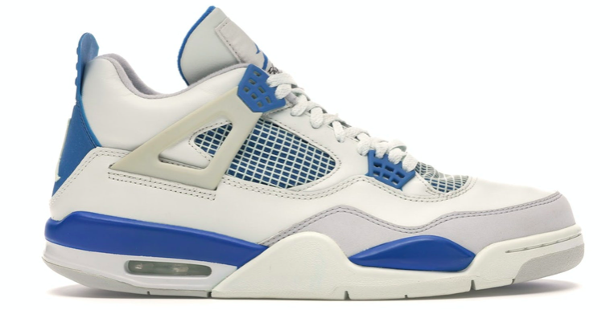
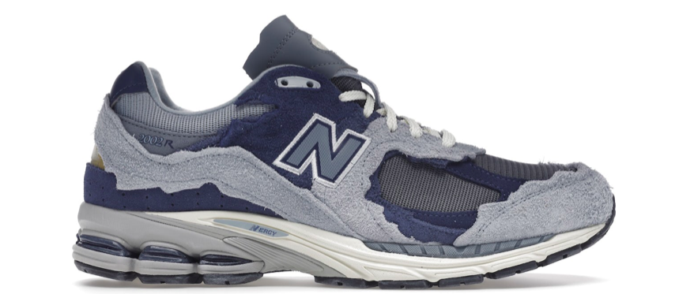

Bienvenue sur
Sneakers Direct
Ce site répertorie toute l’histoire, l’actualité, les tendances et les statistiques des Sneakers.
L'Histoire
La Sneaker voit le jour au XXe siècle. Et oui cela ne date pas d’hier ! C’est avec l’invention du caoutchouc que cela prend forme. La marque Keds met en place la première chaussure avec une semelle en caoutchouc et donc flexible en 1916. L’année suivante, c’est Conserve qui sort sa Chuck Taylor All star. Les premières sneakers sont donc réservées au sport, et c’est plus tard qu’elles prendront une place dans la vie quotidienne.
En effet,
En 1950 l’émergence du hip-hop fait monter la
notoriété de la sneaker. Utilisée pour son confort par les danseurs de break
dance, mais aussi par les rappeurs et adeptes du street-art ; la sneaker commence
à avoir une mauvaise réputation.
Sont considérés comme « racailles » ceux
qui la portent au quotidien. Il faudra attendre 1980 pour que la sneaker se
popularise vraiment.
C’est en effet grâce à Nike et son sponsoring avec
Michael Jordan que les jeunes s’arrachent la Air Jordan 1. La montée du basket
fait que tout le monde veut les mêmes baskets que leurs idoles. Une guerre qui
dure depuis plus de 40 ans, entre Puma Nike et Adidas, les plus grands équipementiers
sportifs.
C’est un peu une contre-culture qui s’installe. On ne porte plus des
sneakers pour faire du sport, mais pour être à l'aise, et pour montrer qu’on
« est dans le coup ».
Le nom « sneakers » a pour origine le verbe anglais « to sneak » signifiant « se déplacer furtivement » et donc silencieusement. Il fait référence au silence des semelles en caoutchouc au sol, contrairement aux chaussures habillées à semelle en cuir dur standard, bruyantes.
« C'est à la fois une chaussure confortable, qui permet de s'enfuir vite une fois que l'on a tagué et que l'on ne veut pas que la police nous rattrape » explique la muséographe Noémie Verstraete.
wikipedia.orgNotre sélection
Jordan 4 Military Blue
New Balance 2002r Protection Pack Navy
{kind=link}
{kind=link}